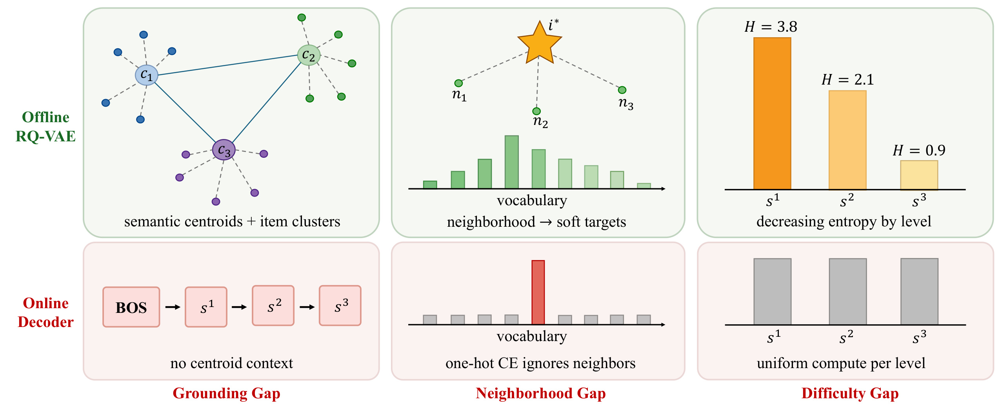
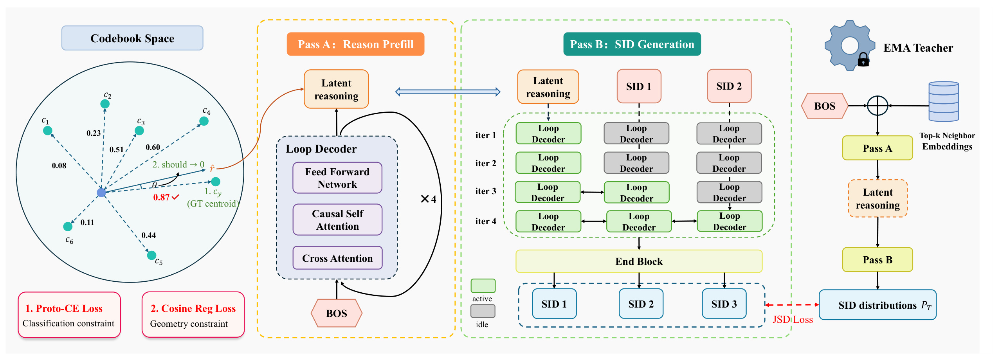
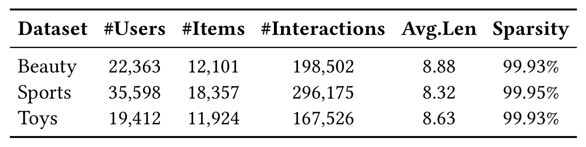
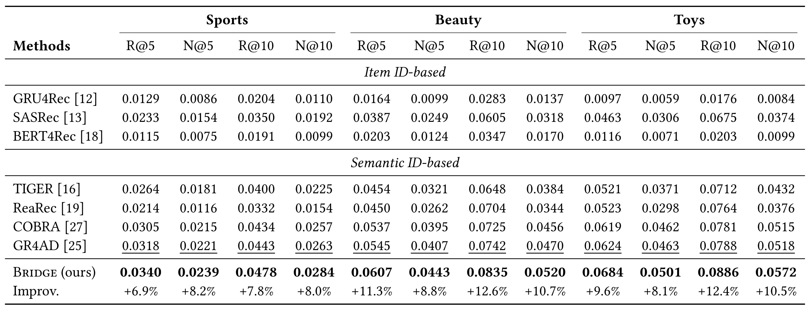
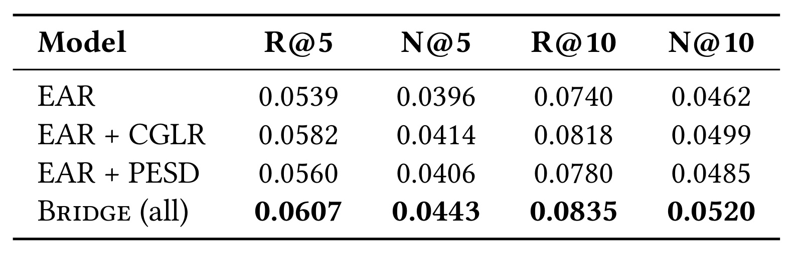
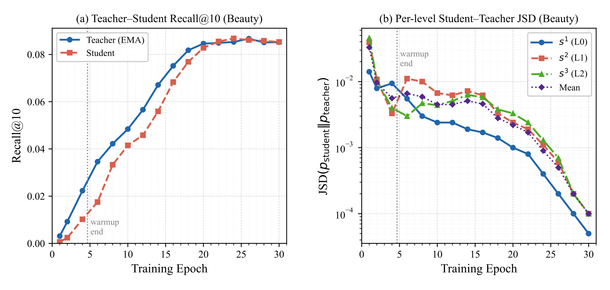

BRIDGE：弥合生成式推荐的语义量化落差
快手科技 Yatong Xiao、Mingjie Sun、Peng Wang、Wenjin Wu 与 Peng Jiang 提出 BRIDGE，把残差量化码本的粗粒度质心、目标邻域和层级预测难度分别引入生成式召回的状态约束、训练监督和解码调度。预印本于 2026 年 11 月 5 日首次公开，本轮未核验到独立代码。 arXiv:2611.07425
残差量化在连续空间中划分语义簇、保留邻域和层级结构，生成器却只看到了这些结构对应的离散索引。首级缺少语义锚点，独热监督抹平相近物品的差异，均匀解码又把相同的计算量用在难度不同的层上。
1. 背景和问题
1.1 量化器交付给生成器的究竟是什么
生成式召回把「从目录找出用户可能点哪个物品」改写为「生成能映射到物品的离散编码」。设想目录里有大量看起来相似的跑鞋与户外鞋。文本编码器可以让它们在连续空间中形成局部邻域。残差量化向量自编码器先选一枚靠近原向量的首级码字，再用后续码本编码残差，每次只处理前面未能解释的那一部分。前几级给出候选范围，后几级补足细节。于是目录检索可以把同前缀物品集中到一条搜索分支，不必把整库所有物品都作为一个无结构的大分类。首级桶是否被 beam 保留也就直接影响后续召回，分支已经被截断时，后面的细节预测无法再访问它下面的候选。
这种接口保留了每个物品对应的 SID 元组。量化时用来决定编码的向量距离、邻居相似程度和簇间几何位置，则没有随一串整数完整传递到解码端。两个首级码字的数值编号即使相邻，连续质心也可能很远。两个物品即使具有相近内容，落到分界面两侧也可能获得不同的首级 SID。解码器可以通过大量训练样本在参数里重建一部分关系，但如果输入只是用户历史和一枚通用起始 token，训练里又只奖励真值路径，就需要从本来有限的用户序列中重新推断这些量化器已经掌握的联系。目录不断增加时，这部分信息如何更新，进一步取决于重训和索引维护机制。
这篇论文把关心的接口损失拆成三个可分别观察的现象。第一个与首级前的状态有关。已有历史只能提供用户侧线索，第一枚生成 token 尚不能读到目标侧的前缀，粗粒度选择主要靠模型从历史中自行归纳。第二个与训练的条件和目标有关。主路看到的是正确前缀和唯一真值，真实请求却沿着自己的预测展开。两个同样错过真值的分支，一个保留语义相近的候选，另一个完全偏离相关区域，硬标签并不直接表达两者的差异。第三个与计算预算有关。第一层要从大范围选择一个语义方向，后续层在已知前缀之下补足残差。如果全部位置使用同一深度，那么算力分配与文章提出的难度先验不匹配。
1.2 三个缺口在同一条召回链路上的位置

Figure 1 的上排画离线量化，下排画在线解码，三列应逐列对照。左列上方把物品画成围绕质心的小簇，下方只留下从起始 token 到三个 SID 的有序链。这是在说离散路径可表达物品身份，起始位置仍缺少对质心语义结构的直接约束。中列上方把目标附近的几个邻居映射到宽一些的词表分布，下方独热柱只保留单一标签。一个偏离真值但语义接近的候选，在两种监督下收到的更新信号不同。右列上方三个逐级下降的柱是层级熵先验的示意，下方三个灰柱代表统一计算。柱上的数值是概念图说明，不能当作 Amazon 样本实测的熵，也不能据此认定所有目录的尾级都好预测。整图的价值是指出三个可干预的位置，具体效果要分别靠后面的首级交叉熵、蒸馏与召回对照、递归开销与吞吐证据检查。也可以从右列反向提出证伪条件。如果在匹配合法前缀后，后层误差仍集中于目录边界或同码碰撞，固定减少尾级算力就未必合适。
这些现象相关，但每个模块解决的是不同问题。给潜状态一个宽粒度的监督类别，能让它在第一枚 token 发出前携带目标方向。它仍无法知道用户这一次最终选择哪个相邻的细分款式，需要通过离散生成继续预测。把邻居引入教师，可使学生得到更有梯度的信息，但教师以正确前缀为条件生成的分布，与学生在错误前缀下可到达的子树可能已经不同。用单独的活跃前缀调度能节省后层计算，也不能自行补回训练信号缺失。三条设计因此既可能互补，也可能因为同向改善早期选择而有收益重叠。文章以固定 EAR 底座上的两条支路消融来检查其中一部分关系。
码本结构还存在不同于相关性标签的偏差。宽语义簇可以较稳定地把相似款式归到一起，却可能把价格、供给和时段偏好各异的商品压进一处。如果用户历史里有多条兴趣线，潜状态面向单个下一个交互的训练，也可能因最近一次点击主导而弱化长期偏好。因而码本锚定适合被看作一个学习目标，仍需借助推荐排序、覆盖和线上可用候选来评价实际效用。若强制模型完全按照簇边界排序，生成器还可能错失跨簇的互补消费。论文采用连续状态约束和蒸馏辅助项，保留了主路根据行为数据学习条件概率的空间。
此前方法可按关注位置区分。TIGER 说明用分层语义编码生成候选可行，后续语义 ID 工作也会在量化侧改善碰撞、融合协同信号或引入多模态信息。另一类方法在生成前用多步潜状态增加计算，帮助解码器从历史归纳用户需求。BRIDGE 选择把两者连起来，并在训练时利用目标物品的语义邻域。只提高 tokenizer 的重构能力，不能保证生成器把额外的几何关系用在首级选择；只增加循环步数，也无法说明新增算力用在了哪一级和为何有用。识别贡献要检查共享 tokenizer、同样 beam 宽度、相同历史与切分下的成对试验。
同样的问题也出现在层级检索与生成代理里。一个模型先选领域，再选工具或文档的情况下，粗分类的偏差会限制后续可以探索的空间。结构上可以借鉴首层监督、受控地向首级多分配计算和用相近候选补充训练信号。可是目录的商品语义可被预先离线聚类，外部工具的权限、时效、执行副作用会实时变化，两种候选空间并不等价。迁移前需确认层级前缀有明确的可用性语义，测量不同层的条件难度和终态错误，并让浅层快速路径具有清楚的资源及质量边界。
2. 方法
2.1 残差量化与共享的双阶段解码
对物品 $i$，预训练编码器先产生连续向量 $e_i$，RQ-VAE 再逐层选择最接近当前残差的码字。用户侧则保留一串历史物品的连续向量，经两层 MLP 投影并叠加可学习位置嵌入形成记忆 $M_u$。生成侧的 LoopDec 在每次递归都通过交叉注意力读取这份记忆。离线量化把目录组织成多级编码，在线历史编码给解码器一份按时间排列的用户上下文。
符号解释：$r_i^\ell$ 是第 $\ell$ 层待量化的残差，$c_k^\ell$ 是该层第 $k$ 个码字，$s_i^\ell$ 是最邻近码字的下标。首层负责近似完整向量，此后才处理扣除已解释分量后的残差。这是原式（3）与（4）的逐级映射，训练推荐器时码本固定。量化的几何意义来自码字向量与残差，单看离散索引的数值无法恢复这种关系。
符号解释：$i^+$ 是真实的下一物品，$H_u$ 是该用户按时间排列的交互，$\mathbf s_{i^+}$ 是长度为 $L$ 的 SID，$s_{i^+}^{<\ell}$ 是此前的编码前缀。式（5）把整条路径概率拆为条件概率，主路 teacher forcing 的逐级负对数似然来自这项分解。在推理中前缀由模型和 beam 搜索产生，首级选择还会改变随后的可访问目录范围。

Figure 2 从左到右串起同一份用户记忆驱动的两次前向及其训练监督。最左的圆形区域是离线粗原型的几何示意，灰色或彩色点代表不同方向的语义中心。分类约束推动预测状态区分目标和非目标原型，余弦约束把它拉向目标方向。中间偏左的 Pass A 输入一枚起始嵌入与槽位零，经循环解码块反复读取用户记忆，产出第一枚 SID 之前的连续状态。图里的注意力与前馈是块内操作。由于这个阶段只有一个理由槽，单槽自注意力没有需要屏蔽的未来槽位，实际历史证据从交叉注意力取得。中间偏右的 Pass B 把该连续状态用作首级输入，后续位置消费前一枚 SID，并以绿色和灰色网格显示各层在哪些轮次更新或闲置。第一列四轮更新，第二列后两轮更新，第三列末轮才加入。各列经过统一的末端块后输出逐级 logits。右侧的教师是学生参数的滑动平均副本，额外把目标的近邻向量注入起始输入，因此训练时有更丰富的语义线索。其连续状态和软分布分别通过余弦损失和 JSD 指导学生，线上路径只保留前两个学生阶段。整张图把质心约束和目标近邻的用途分开。前者规定学生状态应如何组织，后者提供训练时教师的附加条件，实际请求无需事先得到目标商品，才可能对开放目录进行预测。解码效率也要沿图拆开测量，包括历史记忆、预填充、递归、末端块与实际 beam 搜索。其中末端块不能省略在成本描述之外。它要接收完成不同轮数的各层状态，并再次让后层以因果方式读取前面位置，因而仍会产生固定的前向开销。
2.2 CGLR 把粗语义锚定写进潜状态
Pass A 将位置嵌入 $\mathbf p_0$ 与可学习起始嵌入 $\mathbf b$ 拼接，经输入投影形成单个理由槽。随后每轮先加专用的迭代嵌入再进入共享 LoopDec，借迭代标记区分同一权重在不同阶段的工作。文章的公开设置使用四次理由循环，且设计要求理由轮数至少覆盖任意 SID 层的循环预算。
符号解释：$W_{\rm in}$ 将两个维度相同的输入拼接后投回模型维度，$\delta_A^{(j)}$ 是第 $j$ 轮的标记，$M_u$ 是历史记忆，$R$ 是预填充轮数，$\mathbf r$ 是最终理由状态。式（6）、（8）至（10）给出共享块递归。这条连续状态到首级生成的路径不断梯度，因此主路生成损失也会影响历史读取，而非让辅助分类单独决定其表示。
粗原型从首级码本重新聚类得到。 具体做法是将原有首层码字而非全部物品向量重聚为 $V_c$ 个簇，再根据目标首级码字所属的最近粗原型赋标签 $z$。主实验每级有 2048 个码字，粗原型数为 256。重聚能够减少用精确首码监督时小扰动跨过量化边界导致的标签跳变，不过若簇本身分布不平衡，类别难度依旧可能差异很大。训练用轻量投影 $g$ 将 $\mathbf r$ 映射到原型空间，并对投影和粗原型作单位归一化。
符号解释：$q=g(\mathbf r)/\|g(\mathbf r)\|_2$ 是归一化的理由向量，$\hat\mu_k$ 是第 $k$ 个固定原型的单位向量，$\tau$ 是分类温度，两个 $\lambda$ 分别控制原型分类与余弦回归。式（14）至（16）的第一项比较各簇的相对分数，第二项直接缩小目标方向差。更低的分类损失只要求把正确类排到其他类前面，回归则补充同向约束。推理中只有历史预测的连续 $\mathbf r$ 接入生成器，粗标签、目标质心及针对目标的查表都属于训练监督。
2.3 PESD 用特权 EMA 教师提供邻域监督
滑动平均可以直观理解为给近期学生权重更大权重的低通滤波。一两个批次的梯度跳动对教师影响小，持续出现的变化才会累积。教师与学生的架构相同，权重不经过反向传播更新，但它接收了学生在线无法取得的目标邻域。
符号解释：$\theta_t$ 是更新前后的教师权重，$\theta_s$ 是当前学生权重，$m$ 为动量，实验设为 $0.999$。这是式（17）。较大动量稳定目标也会带来跟随滞后，所以教师后期召回与学生交叉并不矛盾。能否提供优于学生的监督，还取决于邻居与正确前缀是否给教师增加了实际可利用的信息。
符号解释：$e_{n_j}$ 是在冻结的原始物品向量空间中检索到的第 $j$ 个近邻，检索排除目标本身，索引基于训练期目录。$W_{\rm priv}$ 与 $\gamma$ 是特权投影及尺度，$o$ 加在教师的起始嵌入上。$p_\ell^t$ 是教师在正确前缀下的第 $\ell$ 层预测，$\mathrm{CE}$ 为针对真值码的交叉熵。式（18）至（20）使邻域投影可通过教师激活链路学习，更新对象仍是学生侧特权投影和尺度，不更新教师权重。近邻只从冻结内容向量取得，仍以训练样本的目标定位邻域，故需要隔离这条链路和推理输入。
符号解释：$p_\ell^s$ 来自学生蒸馏支路对上一枚 logits 取最大值并回填的自生成前缀，$p_\ell^t$ 则来自有邻域的教师强制输入；二者对 logits 施加温度后再归一化。$\widetilde{\mathrm{JSD}}_\alpha$ 是分别取两分布对其加权混合的 KL，再以 $\alpha$ 与 $1-\alpha$ 加权并除以 $\log V$，$V$ 是词表大小。$\mathbf r_s,\mathbf r_t$ 是学生与教师的连续状态，$\mathrm{sg}$ 表示阻断梯度，$H$ 为熵，$\epsilon$ 为门槛，$w(t)$ 是随训练步上升的权重。离散分布对齐和连续状态对齐共享同一学生理由状态。 任一教师层的熵未过门槛时，式（21）至（25）的两项蒸馏关闭，教师侧训练损失仍单独计入。门控能排除过尖的教师输出，不能排除高熵但错误的监督。学生训练中自回填是贪心，线上却采用 beam，仍需独立检查两种前缀分布之间的差距。
2.4 EAR 让后层进入已经更新过的前缀
第一个 SID 位置在第一轮就参加计算。后面的槽先保持初始状态，按预算从前往后依次进入活动前缀。这样第三层参加它唯一一轮循环时，前两层已经经过多轮修正，因果自注意力可以读取较成熟的前缀。相同的 LoopDec 权重在不同位置和轮次复用，改变轮数会改变前向计算量，但不直接改变循环参数的个数。
符号解释：$M=m_1$ 是总轮数，$m_\ell$ 是第 $\ell$ 层的预算，满足从前向后非增。$\mathcal A(j)$ 表示活跃层集合，$\delta_B^{(j)}$ 是生成轮次嵌入，$\mathrm{mask}_{\mathcal A(j)}$ 保持因果次序。式（27）与（28）的公开设置 $(4,2,1)$ 对应四轮分别处理首层、首层、前两层、全三层。循环结束后的 EndDec 统一调整不同轮数的隐藏状态，让后层在输出前还有机会读取最终更新的早期前缀。
符号解释：$\Phi$ 是每 token 每层的计算代理量，$N$ 是循环块层数，$\mathcal L_{\rm ntp}$ 为逐级预测交叉熵，$\mathcal L_{l2}$ 约束 teacher forcing 使用的目标输入嵌入，$\lambda_{l2}$ 为系数。式（30）只计 Pass B 循环的有效 token 层数。式（31）与（32）的总损失把主路、码本约束、邻域蒸馏叠加，各消融的比较以同一 EAR 底座进行。增加首级轮数可能让关键选择更稳定，也会延长串行深度。采用可配置预算有利于做同算力对照，但本文公开实现的预算按 SID 层固定，不随具体请求自适应。
3. 实验结果
3.1 三个 Amazon 子域的比较条件
作者用 Beauty、Sports、Toys 三套公开交互数据，先做五核过滤，再对每位用户按时间留最后一次用于测试、倒数第二次用于验证，余下交互用于训练。这种切分把目标明确为各自的下一物品，但不同用户的测试时点可以不同，不能自然等同于全站统一时间切分的回放。公开实验的历史截断为 32 条，词表用三级残差量化，每级 2048 码字，beam 宽度 20。物品文本及元数据先经 Qwen2.5-1.5B 产生 1536 维向量。生成侧模型维度为 512，八个注意力头，前馈维度 2048。

Table 1 的每行是一个商品子域，列依次是用户数、物品数、交互数、平均序列长度和稀疏度。Sports 有 35,598 名用户和 18,357 件物品，较 Beauty 的 12,101 件和 Toys 的 11,924 件大约多一半，交互量也最大。Beauty 的 198,502 次交互并没有带来最长历史上限，表中的 8.88 是过滤后的平均长度，Sports 为 8.32，Toys 为 8.63。三个域的稀疏度均接近百分之百，在相近的密度范围下看目录大小有一定启发，但目录的语义簇分布、交互组成和样本规模也同时在变。表中三组条件无法独立识别目录规模的因果影响。若把数据迁移到包含大量新物品和短序列用户的业务场景，还应按原始未过滤流量重新看向量覆盖和量化稳定性。五核过滤删去了许多极稀疏对象，因此公开表的平均效果不能直接解释新用户或新目录首日表现。目录规模也不等于实际 beam 每步可用的分支数，分支熵更值得单独打点。例如相同的平均长度也可能来自多数短序列和少数超长序列，无法用平均数估算截断后会丢掉多少有用历史。
模型比较既覆盖按物品 ID 建模的 GRU4Rec、SASRec、BERT4Rec，也覆盖使用语义 ID 的 TIGER、ReaRec、COBRA、GR4AD。前一组主要依靠序列表示学习和物品得分，后一组围绕语义路径生成或生成与连续表示融合。GR4AD 是表中每组最强的对照。比较不同模型时，多项构件一起变化，主表支持整套方案的对比；要定位一条分支的增益还需回到消融。
3.2 主结果在召回数量和位置质量上的读法

Table 2 按三个数据集分栏，每栏有前五和前十的 Recall 与 NDCG。留一测试只有一个目标时，Recall 反映真值是否进入前若干候选，NDCG 进一步区分它出现的位置，靠前命中的贡献更高。应先按同一个数据集、同一个指标列找最强的对照，而不是把不同列平均当成统一排名。BRIDGE 在所有十二项报告指标上高于表内基线。以 Sports 的第十位截断为例，GR4AD 的 Recall 和 NDCG 分别为 0.0443 和 0.0263，BRIDGE 为 0.0478 和 0.0284。Beauty 的对应数值从 0.0742 和 0.0470 到 0.0835 和 0.0520，Toys 从 0.0788 和 0.0518 到 0.0886 和 0.0572。原表给出的 Recall 相对提升分别是 7.8%、12.6%、12.4%，NDCG 相对提升是 8.0%、10.7%、10.5%，三域等权平均约为 10.9% 与 9.7%。按小数点显示精度倒算会有四舍五入差，Beauty 的 0.0093 绝对 Recall 差约等于 0.93 个百分点。三域 NDCG 均提高，说明在该离线口径下正确物品进入名单且靠前的整体表现改善。但分开看相对提升，只有 Sports 的 NDCG 提升略高于 Recall，另外两个域相反，因此不能把论文关于 NDCG 通常更高的文字概括当成所有域的实测规律。Sports 的相对改善偏小可以支持继续做规模切片，不能单凭这三行确定差异由物品量引起。表格也没有给出重复训练的区间，数值排序应保留为本次作者评估中的点估计。看前五的数字还能检查提升是否只是放宽候选位置造成。Sports 的首五召回从 0.0318 到 0.0340，Beauty 从 0.0545 到 0.0607，Toys 从 0.0624 到 0.0684，三域方向一致。结合前十一起读，意味着在作者所用 beam 下收益并没有只出现在第六至第十名。至于同一个目标是从列表之外进来，还是从下游位置移动到上游，需要逐用户交叉结果。表里聚合后只剩均值，无法计算被救回的目标数与原来命中而后来丢失的目标数，也无法识别是否主要受少数热门类目驱动。
同样值得看前五：以 Beauty 为例，R@5 从 0.0545 到 0.0607，N@5 从 0.0407 到 0.0443，两项都改善。实际生产后面还有精排，若基于前五、前十对照直接推断精排收益，会混进候选排序器与出价系统影响。更贴近复现的做法，是同时保留候选的路径、首级桶、是否可映射和去重后物品集。这样才能把「生成了更多 SID」与「交给下游的真实物品更相关」分开。文中的 SID hit rate 也只是逐级 beam 命中真值的诊断指标，与请求级业务漏斗有不同分母。
3.3 Beauty 消融分清底座与两条支路

Table 3 的第一行已经包含 EAR、标准逐级预测与输入嵌入正则，后面分别叠加 CGLR、PESD，最后同时打开两者。四列仍是两个截断位置的 Recall 和 NDCG。用 R@10 读增量，EAR 是 0.0740，加入 CGLR 到 0.0818，加入 PESD 到 0.0780，两者都开是 0.0835；N@10 的同四行是 0.0462、0.0499、0.0485、0.0520。相对同一底座，两条支路分别带来约 10.5% 和 5.4% 的召回提升。在 CGLR 已经开启时加入 PESD，只从 0.0818 到 0.0835，约增加 2.1%，小于从纯底座加入 PESD 的幅度。这个边际对照与两种机制部分重叠的解释相符，联合值仍高于任一单独打开的行。换成 NDCG 指标也要重新计算，不能把召回的边际幅度照搬给排名。表里没有 EAR 关闭、参数或实际循环计算匹配的另一行，因此它只能说明在同一个非均匀调度下两条训练设计值得对照。把联合行相对底座的 12.8% Recall 与 12.6% NDCG 当成 EAR 自己的提升，会把共同底座的条件倒过来。这个消融也只针对 Beauty，其他两个子域并没有相同的四行复现证据。若要定位 CGLR 单独贡献，还可进一步拆开潜状态预填充、粗质心分类和方向回归，避免把增加理由轮数与码本监督混在一起解释。联合行在前五指标也高于两个单开条件，因而收益不局限于扩大深处候选，至少在聚合上还改善了更靠前位置。要估计两条支路的交互，可在每个固定样本上记录四种状态下真值是否出现在前十，再计算单开 CGLR 已救回的案例中，PESD 新增了哪些，替换掉哪些。与四个均值的边际不同，这能说明两个模块是否在同一批请求上重复修复，还是各覆盖一类错误。原文没有逐样本对照，也没有把四种配置分别切到高频首码、罕见码和错误前缀切片。那些结果会决定能否把蒸馏只用在确实缺少邻域信号的样本上。
作者在有 PESD 的 EAR 模型上加 CGLR，另报告 Beauty 的首级 teacher-forcing 交叉熵下降 3.95%，并提到若干部署窗口首级损失下降 2% 至 3%。前一项的输入含正确前缀，且首级本身没有生成的前置 SID。这个指标对第一步分布质量有直接诊断意义，但要看它是否减少了实际 beam 丢掉相关粗簇，还需联看首层 top-k、后续有效路径率与最终检索结果。相同机制若只让已高频的正确簇更尖锐，平均损失也可能下降，而稀有簇仍然难召回。
3.4 蒸馏曲线支持多大范围的结论

Figure 3 左图横轴为训练轮次，纵轴为 Beauty 验证 Recall@10，蓝色为 EMA 教师，红色为学生。预热结束线之前两者都处于快速学习阶段，之后教师在早中期总体更高，约第 22 轮接近，并有后期轮次学生略超教师。图右沿同一横轴显示三层的师生 JSD 和均值，纵轴是对数刻度。首层的蓝线在后半段下降更快，均值整体从约 0.0330 降到接近并低于十的负四次方的量级。右图早期有若干局部上扬，故应描述为整体下降。左图趋同和右图散度变小都符合教师监督在工作时的预期，但学生的硬标签训练仍在继续，EMA 教师也一直追随学生。两条曲线没有固定老师或移除邻域的独立对照，单靠它们无法算出变化中有多少由近邻几何带来。更强证据应将打乱近邻、只看真值前缀、取消熵门控和完全停止蒸馏等条件放在同一批数据上比较。尤其注意右图的间距是倍率关系，纵向移动同样一段代表乘性变化。不能用这条轴上曲线的斜率换算召回的绝对增长。
使用这些曲线时还要注意输出分布的条件不同。教师读真实前缀、学生读自己贪心生成的前缀，因此后层同一个词表下标对应的完整 SID 可以属于不同路径。较低 JSD 只表示当时的逐层预测更接近。若目标是验证对在线路径的修复，最好额外做前缀锁定和前缀扰动，统计教师信号在合法子树内实际覆盖的概率，以及学生是否能在早层预测出错时恢复到更相关的物品集合。现有曲线和消融足以支撑方案在 Beauty 上可行，但尚不足以证明每个语义相近的物品都获得更好的探索机会。
3.5 循环开销、吞吐和线上业务指标分别计算
三个循环层、逐级预算 $(4,2,1)$ 给 Pass B 循环项 $3(4+2+1)=21$ 个 token 层单位。文中统一九层三位置的比较为 27 个单位，差值约 22%。这只是循环项的代理量，未将历史编码、四轮理由预填充、末端块、beam 分支维护、索引查表、显存访存与批次调度统一计入。另一个指标是作者报告 EAR 解码器相对 GR4AD 的九层解码器减少 57.3% 参数，分母是比较的解码器部分。相同权重反复执行即便不增加参数，仍可能有较深的首级串行路径。实现时如果没有跳过闲置位置，理论活跃格减少也不一定兑现成硬件吞吐。
论文 §4.4 提到在 NVIDIA L20 上相对 GR4AD 的吞吐约提高 20%，以 QPS 表示。§4.5 单独报告短视频平台电商广告场景一周、5% 流量的实验，每千次曝光收入 eCPM 相对提升 0.65%。前者的机器和处理请求口径不能替代后者的流量和收入统计，作者未披露足够细的并发、请求条件、两侧流量分配、随机化单位、置信区间和护栏，不能把这两个数写成同一个已经完全对齐的线上因果对照。业务读数也不能换算为总收入提升，因为总曝光和其他分母未提供。离线三个域使用公开目录，线上输入和商业化目标并不一定与公开配置一致。现有材料给出的是作者侧的可行性信号，可用于明确下一轮复现的量化口径。
4. 总结
4.1 我的判断
BRIDGE 最有价值的设计，是把码本已有的信息分别放进训练和推理能够使用的位置。粗质心给连续状态一个可解释的监督方向，训练时的邻居均值与教师前缀给出平滑目标，层级调度决定线上每一枚码的实际计算。三者在结构上都围绕同一个 SID，避免每条分支各自产出不可对齐的目标。对生成式召回，值得保留的是这组接口，因为它允许以同一个码本和同一个物品目录反复检验「候选首级选择」「下一层纠错」「预算再分配」各自的影响。
Beauty 消融中码本锚定的召回增量大于单独蒸馏，联合增量又小于将两条支路的孤立相对增量直接相加。这个结果使我更愿意先看首级诊断，再决定复杂教师链路是否值得。若实际系统的主要失败发生在第一枚码，由此丢掉整个子树，首级状态干预容易在前缀覆盖上观察到效果。若主要瓶颈是 SID 到可投放商品的映射、旧目录失效或下游硬约束，这篇文章的改动只能覆盖其中一部分，改善一个离线分数也可能无法增加真实供给。
4.2 局限与后续跟进
- 公开设置的绝大多数交互序列较短，目录只有一万到两万件商品，过滤条件还降低了真实冷启动的比例。更大目录会改变码本占用、桶内竞争和候选覆盖，当前数字对更稀疏人群的外推有限。
- 依赖固定的内容编码、码本和训练期邻域索引。频繁新增物品时，什么时候重新聚类、哪些旧 SID 要保留映射，以及索引版本如何与教师和在线解码器一起更新，论文没有给出运行证据。邻域相似也不保证商业约束或用户即时需求一致。
- 蒸馏教师读真实前缀，学生蒸馏支路贪心回填，线上使用 beam。熵门控只能控制教师太尖的情况，无法验证同一层词表分布落到真实可用子树中的比例，也无法保证不产生错误但相似的推荐。
- Beauty 消融的比较都共享 EAR，缺少同算力下统一预算、反向预算与非均匀预算的直接对照。线上 QPS 和 eCPM 是作者报告的不同量，少了硬件利用、尾延迟、业务护栏和方差信息，外部团队难以估算复制时需要多少资源。
- 本轮没有核验到独立代码。稿件页眉使用 WSDM ’27 样式，DOI 是占位字符串，按首次公开的 arXiv 预印本记录。复现需要固定向量提取、码本训练、候选合法性、最近邻数据版本及时间切分。
可以先做三项跟进。第一，在同一个码本、候选空间和 beam 宽度下，将普通起始嵌入、无原型损失的连续预填充及完整 CGLR 分开测试。逐域报首层命中、真值分支被提前剪掉的比例和最终有效物品召回。这样能区分多算几轮和新增质心监督是否真的解决同一问题。第二，将真实近邻、同簇随机近邻、打乱近邻及仅正确前缀的 EMA 教师分别用同样的蒸馏系数训练，再按前缀正确性看每一级的分布质量，估算内容几何本身的贡献。第三，用等参数及等循环单位分别比较不同层预算，再从原始设备记录 Pass A、活跃循环、末端块、beam 与目录映射的分项延迟和吞吐。若做业务验证，应单列流量分配和不同用户切片，以曝光、收益与质量护栏判断结果落在哪个环节。
更广义的层级生成任务也可以复用这个拆法。离线目录的结构可以作为训练监督，在线状态仍需由模型在可见条件下预测。对工具路由来说，粗原型可对应技能族群，但要在权限和实时工具可用性约束下另做比较。对分层文档召回来说，任务相关性也未必服从内容向量的邻域，需先确认粗层信号与目标的一致性，再决定是否把较多计算放在开头。